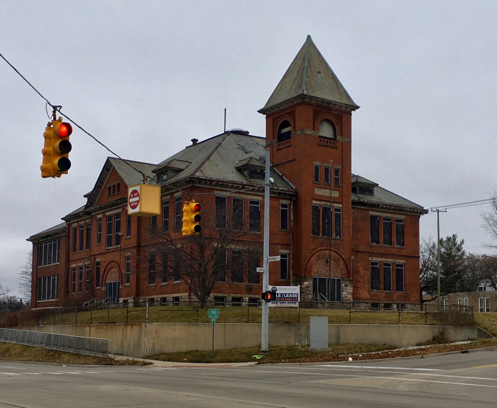
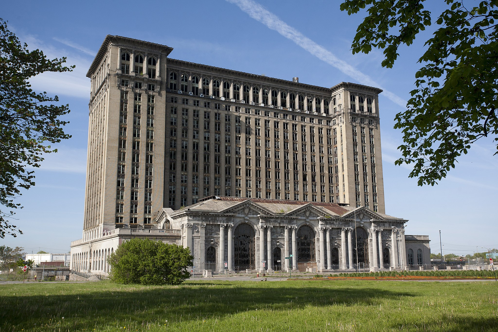

Name: Pontiac Central School
Location: Pontiac, MI
Cordinates: 42.637208, -83.288606
Status: Active
The Central School in Pontiac, Michigan, was constructed in 1893 in the Richardsonian Romanesque architectural style. The school boasts prominent Syrian arches above its main entrances and central tower belfry. Its construction was intended to replace the Union School on the same site, and it originally held eight classrooms with a capacity of approximately 320 students. Although the building served its intended purpose until 1982, it was later converted into an adult education center and job placement program before ultimately being abandoned (Carrotflower, 2020) [1].
Name: Dilapidated Barn on Talladay Road
Location: Augusta Township, MI
Cordinates: 42.12795, -83.608136
Status: Demolished

The dilapidated barn in Augusta Township, Michigan, was built in 1937 and is located near a family home. Although not much is known about the farm or its history, the barn has been left in a state of disrepair and has since been demolished based on the look of google map(Burdette, 2012) [2].
Name: Michigan Central Train Station
Location: Detroit, MI
Cordinates: 42.328832, -83.07777
Status: Renovated
After sitting abandoned since 1987 due to a devastating fire, this stunning building was given a new lease on life when it was purchased by Ford in 2018. The company has since transformed the former station into a cutting-edge commercial activity center that is set to be completed by the end of 2023 (Michigan Central Station Renovation | Development Plans, n.d.) [3].
Footnotes
[1] Carrotflower, A. (2021, January 20). Pontiac Central School, Pontiac, Michigan - 20201213 [Review of Pontiac Central School, Pontiac, Michigan - 20201213]. Wikimedia Commons. https://t.ly/nWJm
[2] Burdette, D. (2012, July 31). Dilapidated Barn on Talladay Road Augusta Township Michigan.JPG [Review of Dilapidated Barn on Talladay Road Augusta Township Michigan.JPG]. Wikimedia Commons. https://t.ly/vB4Er
[3] Michigan Central Station Renovation | Development Plans. (n.d.). Michigan Central. Retrieved May 1, 2023, from https://t.ly/Wi9M